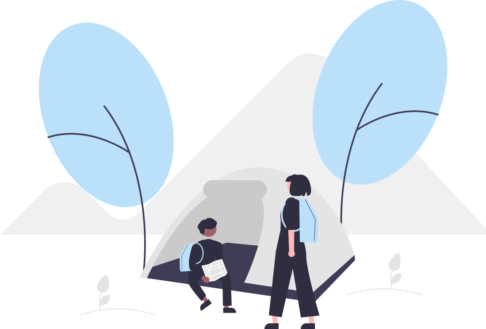
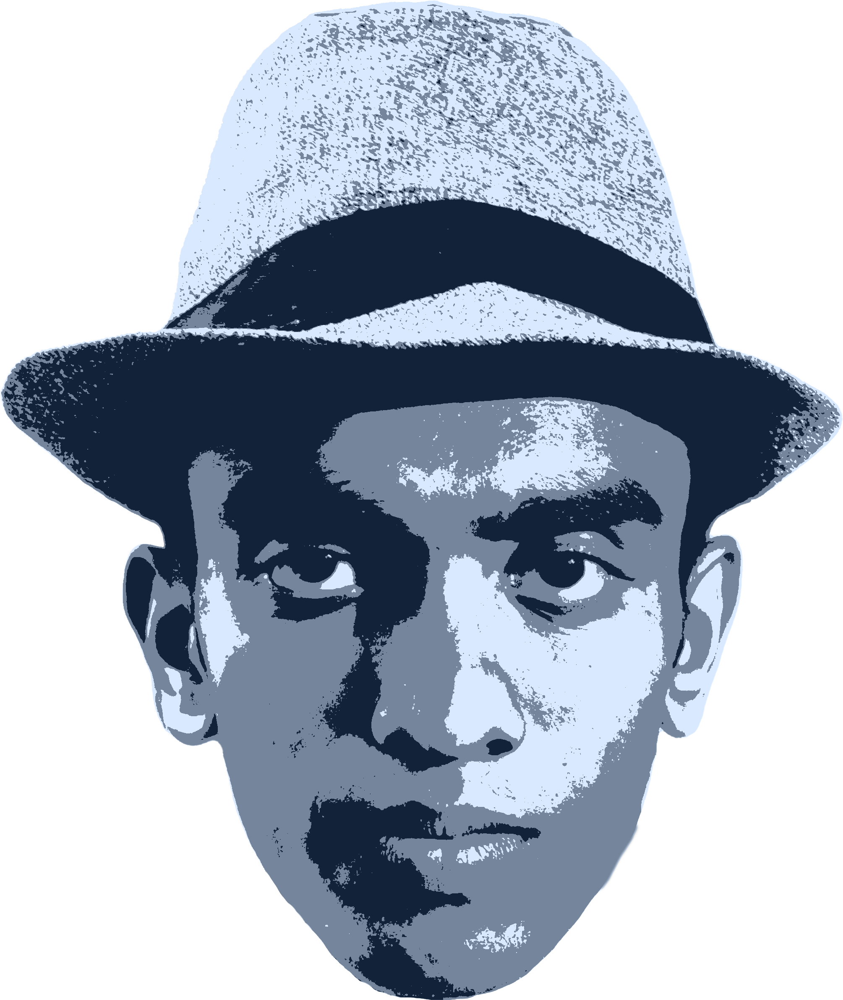

I AM THIMUTH WETTASINGHE
Data Science and Business Analytics undergraduate at General Sir John Kotelawala Defence University, passionate about exploring the intersection of artificial intelligence, data, technology, and design. Turning ideas into practical, intelligent systems and engaging digital experiences.
ABOUT ME
Bridging data-driven decision-making, machine learning, and human-centered design.
Data Science & Business Analytics Undergrad
I'm an undergraduate in Data Science and Business Analytics at General Sir John Kotelawala Defence University, Sri Lanka (Faculty of Computing, Intake 42), and an alumnus of Ananda College, Colombo 10. My interests span artificial intelligence, machine learning, data-driven decision-making, and digital design.
I enjoy exploring how intelligent systems can address real-world challenges, particularly in business analytics and emerging technologies. I believe in continuous learning, creative problem-solving, and using technology to make a practical difference.
Technical Skills
Leadership & Involvement
- IEEE Student Branch • KDU Contributed to tech initiatives, design, and logistics (Envision 4.0, Step into Industry).
- Ananda College ICT Society Served as Chief Organizer coordinating technology initiatives and team communications.
- IEEE Young Professionals & Computer Society Active engagement in technical communication, volunteering, and editorial activities.
Volunteering & Service
Sri Lanka Life Saving Association (2019–2023)
Gained practical lifesaving experience in public safety, rescue operations, and accident prevention at Mount Lavinia Beach and during Poson events in Anuradhapura.
Strengthened discipline, quick responsiveness in high-pressure situations, and collaborative teamwork.
Research Interests
Artificial intelligence, machine learning, data-driven business decisions, AI applications in motorsport, and intelligent systems that solve practical challenges to improve how people interact with the world.
DATA, AI & DEVELOPMENT
A selection of technical projects, intelligent systems, and creative media builds.
AI-Based Traffic Light Management System
An intelligent traffic management project designed to improve signal control through adaptive decision-making. Explores YOLOv8 vehicle detection, traffic flow estimation, fuzzy-logic signal timing, deep reinforcement learning, and coordinated connected intersections.

SmartSpot Lanka (AI Location Intelligence)
A proposed AI-powered business location recommendation system helping entrepreneurs evaluate suitable commercial locations (cafés, retail, bookshops) using geospatial clustering, competitor density, foot traffic, and profitability scoring.

Interactive Portfolio & Web Experiments
A high-performance personal web platform featuring custom video backdrops, GPU-accelerated interactive 3D mesh physics, kinetic logo orbit transitions, and responsive Bento layouts without bloated third-party dependencies.
Creative Portfolio: Digital Media & Branding
Commercial design and visual storytelling projects, including the Inoki's Beauty Zone brand identity, social media campaign posters, and promotional event announcement videos combining functionality with aesthetic clarity.
WHAT I DO
Combining analytical rigor with design thinking to solve complex problems.
Data Science & Analytics
Transforming complex data into actionable business intelligence through exploratory data analysis, statistical thinking, predictive modeling, and insightful visualization.
AI & Computer Vision
Developing intelligent systems utilizing computer vision algorithms (YOLOv8), adaptive decision logic, reinforcement learning, and automated data pipelines.
Web & Interactive UI
Building clean, accessible, responsive web applications and interactive front-end experiences designed for performance, fluid motion, and intuitive ergonomics.
Digital Media & Branding
Crafting coherent visual identities, promotional video storytelling, typography hierarchies, and social media campaign assets that convey ideas clearly and boldly.
LET'S CONNECT
I'm always interested in connecting with people working in data science, AI, technology, and design. Let's collaborate!